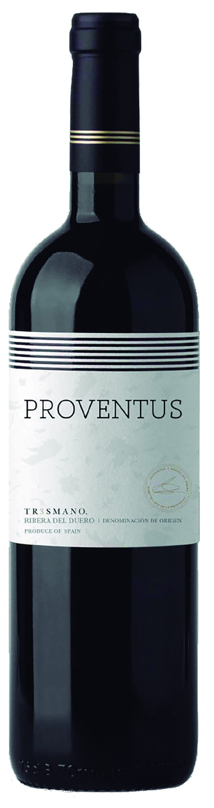

Proventus
I — Ribera del Duero red
Proventus
Fresh, honest, 100% Tinta del País.
A Ribera del Duero red made entirely from Tinta del País with light barrel ageing. The vines were planted by Fernando Remírez de Ganuza.
100%Tinta del País
LightBarrel ageing